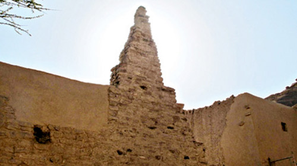

الأماكن التراثية في العلا

مدائن صالح (الحِجر)
مدائن صالح تُعد من أبرز المواقع الأثرية في المملكة العربية السعودية، وهي أول موقع سعودي يُدرج ضمن قائمة التراث العالمي لليونسكو. تحتوي على أكثر من 100 مقبرة منحوتة في الجبال تعود لحضارة الأنباط، وتُعرف بجمال واجهاتها المعمارية المنحوتة بدقة عالية.

البلدة القديمة
تقع وسط العلا وتتميز بشبكة من الأزقة الضيقة والمنازل الطينية الحجرية المتلاصقة. تعكس أسلوب الحياة التقليدية لأهل العلا سابقًا، وتضم سوقًا قديمًا ومسجدًا تاريخيًا. تُعد مكانًا مثاليًا لفهم الطابع المعماري والمجتمعي للمنطقة في العصور السابقة.

صخرة الفيل
تُعد من التكوينات الصخرية الطبيعية الأكثر شهرة في العلا، وسُميت بذلك لأن شكلها يُشبه الفيل الضخم. تقع في ساحة مفتوحة وتحيط بها أماكن للجلوس والاستجمام، وغالبًا ما تُضاء ليلاً لتُظهر روعتها بطريقة فنية.

قاعة مرايا
قاعة مرايا هي أكبر مبنى مغطى بالمرايا في العالم، وتُعد رمزًا حديثًا في العلا. تعكس المرايا جمال الجبال المحيطة، وتُستخدم القاعة في استضافة الفعاليات الثقافية والفنية الدولية ضمن مهرجانات شتاء طنطورة وغيرها.

موقع دادان
يُعتبر من أقدم المواقع الأثرية في شبه الجزيرة العربية، وكان عاصمة لمملكتي دادان ولحيان. يتميز بالمقابر المحفورة في الجبال والنقوش الحجرية التي تعكس قوة تلك الحضارات القديمة في التجارة والسياسة.

جبل عكمة
يُعرف بمكتبة العلا المفتوحة، إذ يحتوي على أكثر من 500 نقش ولغة قديمة من بينها اللحيانية والنبطية. يُعتبر هذا الجبل دليلًا تاريخيًا هامًا عن تطور الكتابة والحياة الدينية والاقتصادية في المنطقة.

ساعة الطنطورة
هي أداة فلكية تقليدية استخدمها أهالي العلا في تحديد بداية المواسم الزراعية. تتكون من مسلّة حجرية تُلقي بظلها على جدار معين لتحديد وقت الزراعة والحصاد. تُعد من الابتكارات الذكية التي تدل على فهم سكان العلا للعلوم الفلكية.